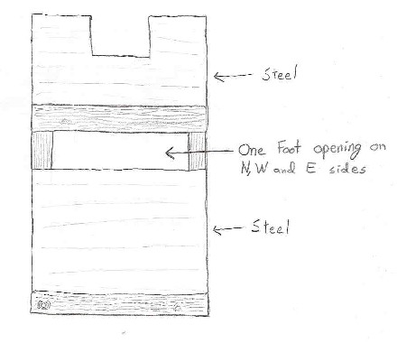
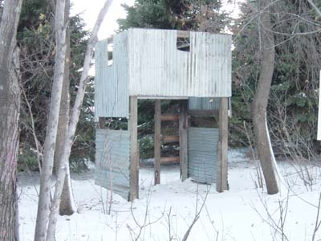
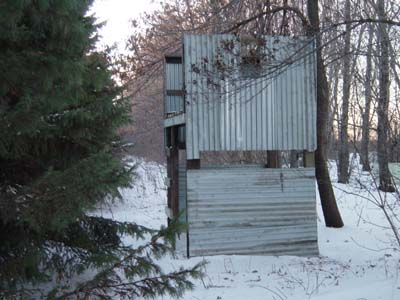
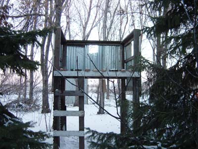

| Main Page | Team Members | Markers | Field | Projects | Bonus |
GENERAL INFORMATION: Project Name: The Outpost Project Status: Construction started Timeframe: November 2004 - ? Design: David Build Team: David, Daniel and Brian
DESCRIPTION: The Outpost was created as a rival to the Alamo. Once a player gets on the top of the Alamo he is pretty safe. The Outpost will be another tower that is built south of the Alamo. Two players can trade shots from the same altitude while players on the ground move in on the towers. Of course there is a downside to this setup. If one team captures both the Alamo and the Outpost they will have quite an advantage over the other team. However, the Outpost will be the weaker tower. It will only be enclosed on three sides, leaving the south side open for people who sneak through the pines to ambush it. The Outpost may be used as a storing house for our tank if that project ever leaves the ground. The tank will be stored in the lower level and the north wall will be built to swing open and let the tank out.
 |
| Concept drawing of Outpost |
| Not drawn to scale. |
Update: December 2, 2003 We worked on The Outpost for three weekends and it is starting to take shape. On November 12, "Jersey" and I dug holes and set the posts. Next week, all three of us put up the floor for the top story. We also started putting steel on the east and west sides. The week after that, "Angus" and I added a ladder on the south side. We finished the gaurd rail on the second story and finished putting steel on the east and west side as well as putting up some of the steel on the north side. Now three sides are completed: the east, west, and south. The top level is close to completion, I plan on buying treated plywood next spring to finish the floor. It is still questionable about how we will finish the north side.
 |
| Front side |
 |
| East side |
 |
| Back side |
| Previous Project | Next Project |
| Main Page | Team Members | Markers | Field | Projects | Bonus |